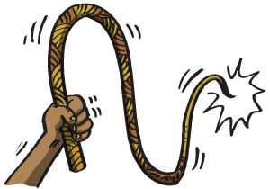
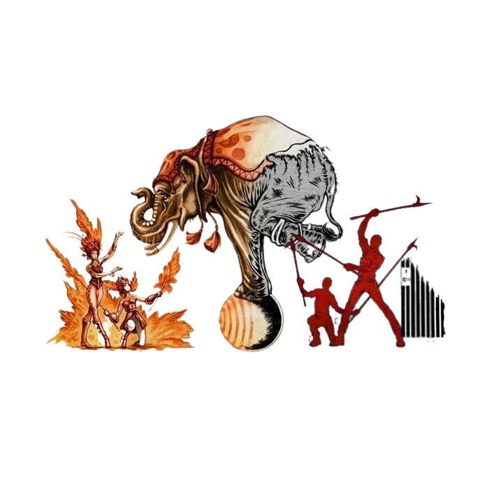
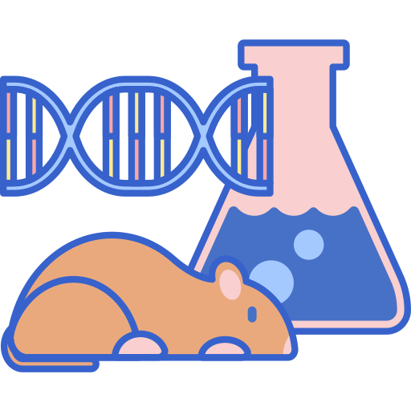

Cada especie es una obra maestra, una creación hecha con extremo cuidado y genio. (Edward O. Wilson)
Todos los seres vivos somos una creación perfecta.
Conoce algunas formas de maltrato animal
No Alimentarlos Bien
Es fundamental una buena alimentacion para su salud, vitalidad y bienestar. Debemos procurar que reciba todos los nutrientes necesarios para una vida sana. Una buena alimentación es indispensable para cuidar la salud de nuestros animales de compañía.

Estimularlos Con Instrumentos Que Les Causan Dolor
El dolor produce complicaciones cardiovasculares, pulmonares y gastrointestinales además produce una respuesta neuroendocrina y metabólica e inicia efectos adversos que prolongan y complican la recuperación de heridas o enfermedades.

Hacerlos Trabajar Sin Descanso
El trabajo sin descanzo o forzado genera muchas complicaciones en los animales, como estres, enfermedades cardiovasculares, daños fisicos y emocionales por lo que se debe mantener un limite y respetar las capacidades de cada animal.
Hacerlos Trabajar Al No Estar En Un Buen Estado Físico
Al hacerlos trabajar teniendo una herida o en un estado fisico deplorable, esta se puede empeorar, causando que se haga más grande, infectandola, conseguir que el animal obtenga una enfermedad o causando más dolor y malestar.
Estimularlos Con Drogas Sin Fines Terapéuticos
Los animales sufren muchísimo físicamente cuando consumen dorgas porque pueden tener consecuencias como hipotermia con convulsiones, una bajada en la frecuencia cardiaca o un aumento súbito, puede llegar hasta la muerte.

Hacer experimentos con animales
El experimentar con animales causa daños graves en ellos, pueden ser fisicos, mentales y enfermedades, en algunos casos ocasionan cambios genéticos o la muerte por eso es que se ha prohibido la experimentación con ciertas especies de animales.